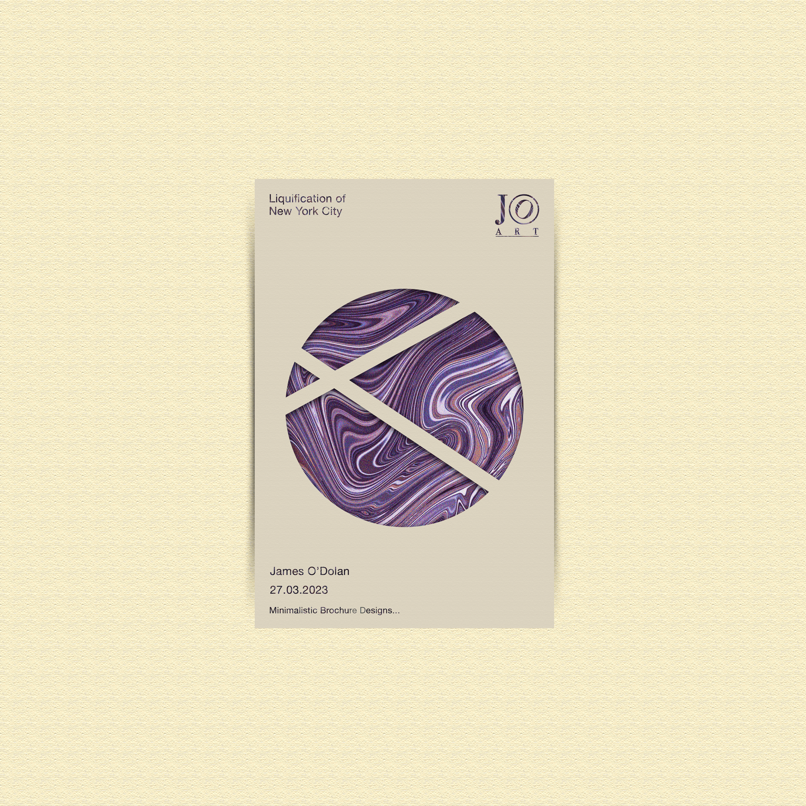
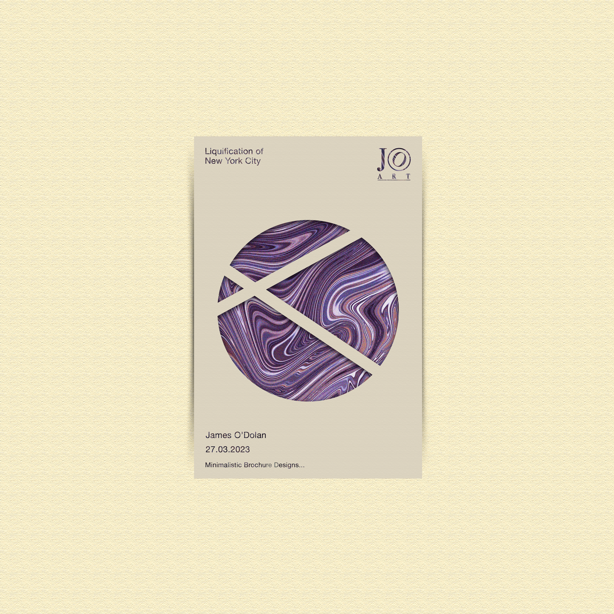

Brochure Project
Poster, Brochures and Layout
While I was enjoying my social media artworking, I realised that there were still some weak points in my typography and sometimes layout. I wanted to challenge myself and overcome this to expand my skill range. It was also during this time that I was seeing many poster designs online and that inspired me to do this.
 

Firstly I worked on improving the typography, so I started looking up the rules of typography. Using contrast in fonts, being selective with what fits coherently to the theme of the design. This was difficult at first so I would sit and watch many tutorials.
While enjoying my social media artwork, I noticed weaknesses in my typography and layout. To challenge myself, I drew inspiration from posters and decided to design three complex sets to learn more about bold, strong poster design. Here's what I created.
I also focused on incorporating textures, patterns and imagery that aligned with the poster's theme. Balancing visuals without overpowering the design was tricky, so I practiced not taking the creativity so far that the meaning or original aim was lost.
I set my self the task of more complex poster designing to help me learn more indepth about what creates a strong, bold poster design. So, working in sets of three at a time. This is what i came up with.
As you can see here I was slowly getting the hang of text postitioning, font choice and the concept of negative space. Experimenting with all capitals, font choice. The next steps I wanted to master were hierarchy of information and visual font contrast
Skills Used
Grid Systems in Photoshop - I researched grid systems in Photoshop, focusing on macro and micro spacing techniques to optimize text and image layouts. This enhanced the balance and flow of my designs, ensuring all elements harmonize.
Typography Research - I explored typography through blogs and YouTube, learning to create designs that are cohesive and legible. This research helped me apply best practices in font selection, spacing, and alignment for a more polished final product.
Typography Experimentation - Experimenting with various fonts gave me a better understanding of typography. I learned which styles fit different contexts, improving both readability and the overall visual appeal of my designs.